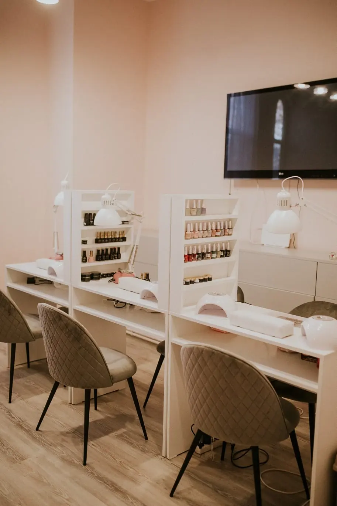
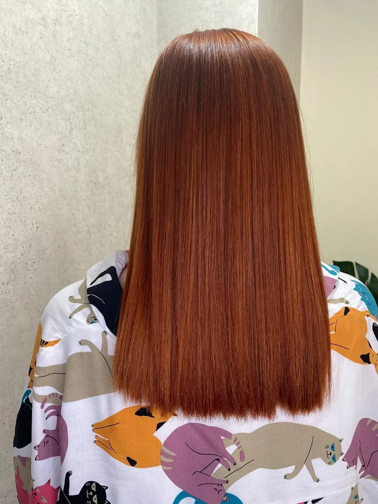
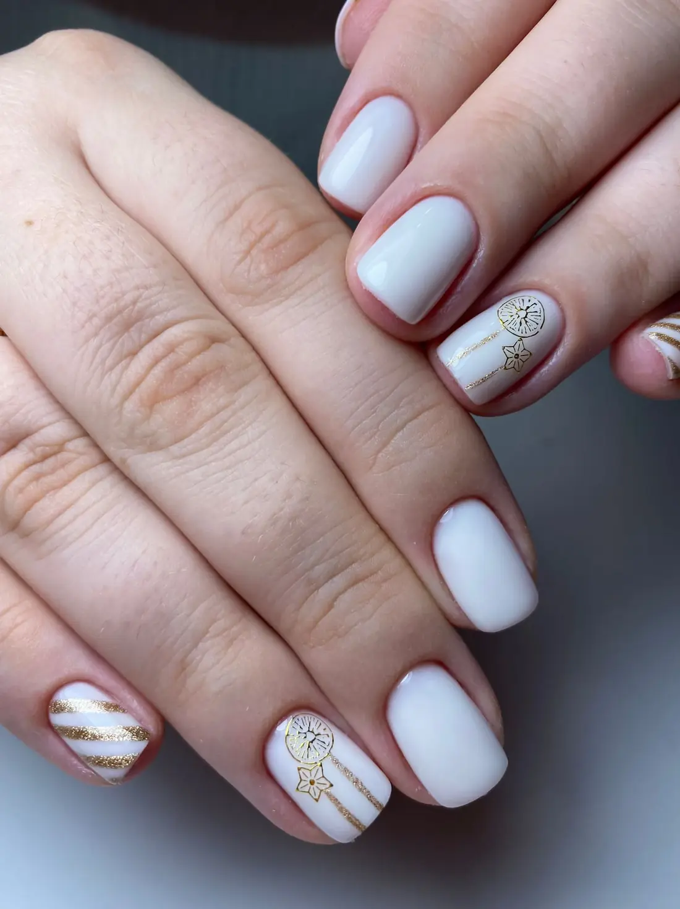
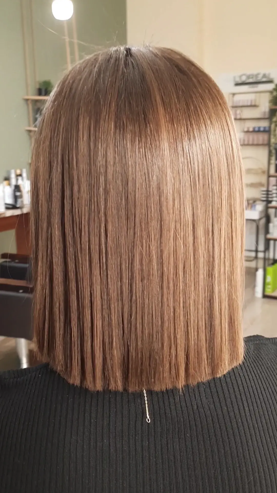
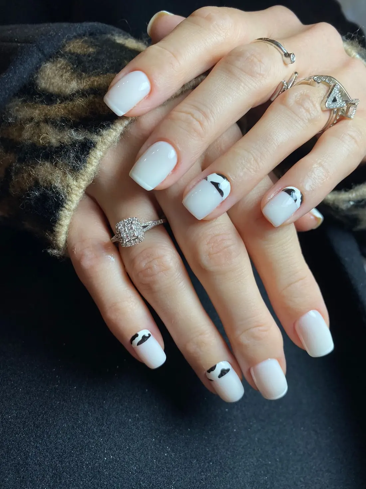
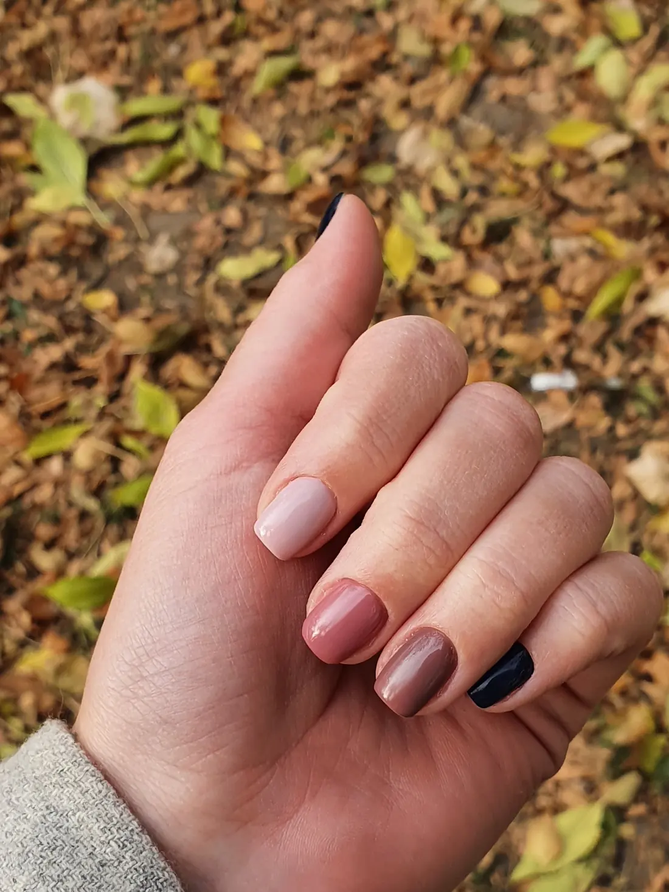
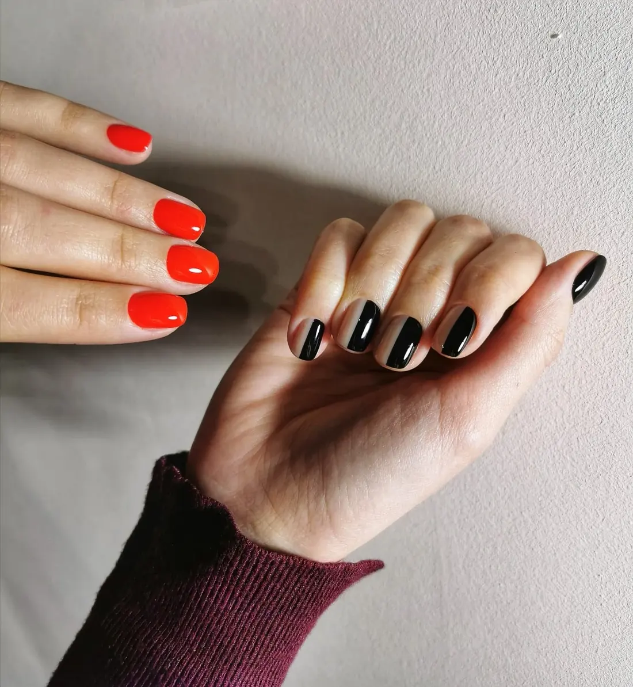
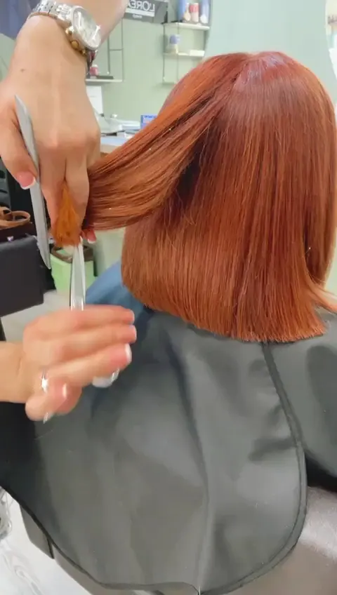
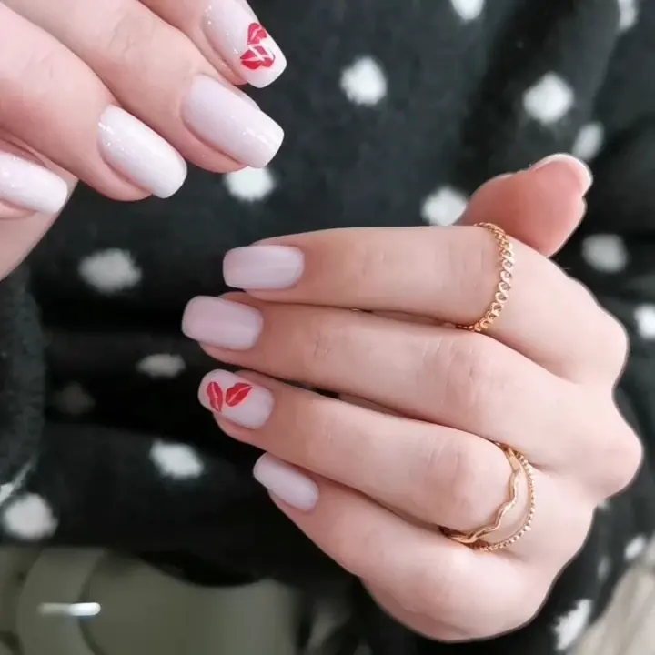

Peony{{Unghii, culoare și tuns — fiecare petală e un serviciu.|Nails, colour and cuts — every petal is a service.|Unhas, cor e corte — cada pétala é um serviço.}}
{{Atinge o petală ca să vezi ce facem și cum arată la noi. Când te-ai hotărât, alegi ziua, iar cererea de programare pleacă scrisă — pe WhatsApp sau prin SMS.|Touch a petal to see what we do and how it looks on our clients. Once you’ve decided, pick the day and your booking request goes out already written — by WhatsApp or SMS.|Toque numa pétala para ver o que fazemos e como fica. Quando decidir, escolhe o dia e o pedido de marcação sai já escrito — por WhatsApp ou SMS.}}
{{Trei clipuri, fără filtre.|Three clips, no filters.|Três vídeos, sem filtros.}}
{{Un bob drept tăiat la linie, un aramiu care strălucește sub lampă și buze roșii pictate pe unghii albe.|A straight bob cut to the line, a copper that shines under the lamp, and red lips painted on white nails.|Um bob direito cortado à linha, um acobreado que brilha à luz e lábios vermelhos pintados em unhas brancas.}}
{{Trei pași până la scaun.|Three steps to the chair.|Três passos até à cadeira.}}
{{Alegi petala|Pick the petal|Escolhe a pétala}}
{{Manichiură, nail art, culoare, tuns sau coafat. Poți bifa și „altceva” și să scrii ce vrei.|Manicure, nail art, colour, cut or styling. You can also tick “something else” and write it down.|Manicure, nail art, cor, corte ou brushing. Também pode marcar “outra coisa” e escrever.}}
{{Alegi ziua|Pick the day|Escolhe o dia}}
{{Și intervalul care îți convine: dimineața, la prânz, după-amiaza sau seara.|And the time of day that suits you: morning, midday, afternoon or evening.|E o período que lhe convém: manhã, almoço, tarde ou noite.}}
{{Trimiți mesajul|Send the message|Envia a mensagem}}
{{Pe WhatsApp sau prin SMS, deja scris. Salonul îți confirmă ora exactă.|By WhatsApp or SMS, already written. The salon confirms the exact time.|Por WhatsApp ou SMS, já escrita. O salão confirma a hora exata.}}

{{Pe Pictor Octav Băncilă, la numărul 7.|On Pictor Octav Băncilă, at number 7.|Na Pictor Octav Băncilă, no número 7.}}
- {{Adresă|Address|Morada}}
- Str. Pictor Octav Băncilă nr. 7, 700136 Iași
- {{Telefon|Phone|Telefone}}
- 0742 333 332
- {{Program|Hours|Horário}}
- {{Miercuri 09–20|Wednesday 09–20|Quarta 09–20}} · {{restul săptămânii de confirmat|rest of week to be confirmed|resto da semana a confirmar}}
{{Cinci petale, cinci servicii.|Five petals, five services.|Cinco pétalas, cinco serviços.}}
{{Ce vezi mai jos e lucrat la noi în salon. Prețurile și duratele le primești de la salon când faci programarea.|Everything below was done here in the salon. Prices and durations come from the salon when you book.|Tudo o que vê abaixo foi feito aqui no salão. Preços e durações são dados pelo salão na marcação.}}
{{Cauți altceva?|Looking for something else?|Procura outra coisa?}}
{{Pedichiură, sprâncene, tratamente — întreabă salonul ce mai face.|Pedicure, brows, treatments — ask the salon what else they offer.|Pedicure, sobrancelhas, tratamentos — pergunte ao salão o que mais faz.}} {{lista completă de confirmat|full list to be confirmed|lista completa a confirmar}}
{{Petala, ziua, intervalul.|The petal, the day, the time.|A pétala, o dia, o período.}}
{{Mesajul se scrie singur pe măsură ce alegi. Îl trimiți pe WhatsApp sau prin SMS, iar salonul îți confirmă ora.|The message writes itself as you choose. Send it by WhatsApp or SMS and the salon confirms the time.|A mensagem escreve-se sozinha à medida que escolhe. Envie por WhatsApp ou SMS e o salão confirma a hora.}}
{{Pereți roz-pudră, catifea verde.|Powder-pink walls, green velvet.|Paredes rosa-pó, veludo verde.}}
{{Un salon luminos, cu mese albe de manichiură și scaune de catifea în verde-salvie — aceleași culori ca un bujor cu frunzele lui.|A bright salon with white manicure desks and sage velvet chairs — the same colours as a peony and its leaves.|Um salão luminoso, com mesas brancas de manicure e cadeiras de veludo verde-sálvia — as mesmas cores de uma peónia e das suas folhas.}}
{{Mâini și păr, sub același acoperiș.|Hands and hair, under one roof.|Mãos e cabelo, sob o mesmo teto.}}
- {{Posturi de manichiură cu lampă, raft de culori și scaune tapițate.|Manicure stations with lamps, a colour rack and upholstered chairs.|Postos de manicure com candeeiro, prateleira de cores e cadeiras estofadas.}}
- {{Coafor: culoare, tuns cu foarfeca și coafat drept, lucios.|Hair: colour, scissor cuts and sleek, straight styling.|Cabeleireiro: cor, corte à tesoura e brushing liso e brilhante.}}
- {{4,7 pe Google, din 135 de recenzii.|4.7 on Google, from 135 reviews.|4,7 no Google, em 135 avaliações.}}
- {{Echipa, cu nume și specializări:|The team, with names and specialities:|A equipa, com nomes e especialidades:}} {{de confirmat|to be confirmed|a confirmar}}
{{Lucrate la noi.|Done here.|Feito cá.}}








{{Pictor Octav Băncilă nr. 7.|Pictor Octav Băncilă no. 7.|Pictor Octav Băncilă n.º 7.}}
{{Sună pentru o programare rapidă sau trimite-ne un mesaj scris.|Call for a quick booking or send us a written message.|Ligue para marcar depressa ou envie-nos uma mensagem escrita.}}
{{Program|Opening hours|Horário}}
{{Telefon|Phone|Telefone}}
Instagram / Facebook: {{de confirmat|to be confirmed|a confirmar}}
700136 Iași {{Deschide în Google Maps|Open in Google Maps|Abrir no Google Maps}}